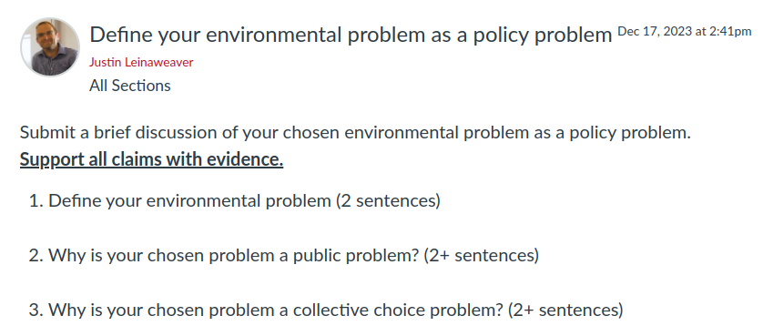
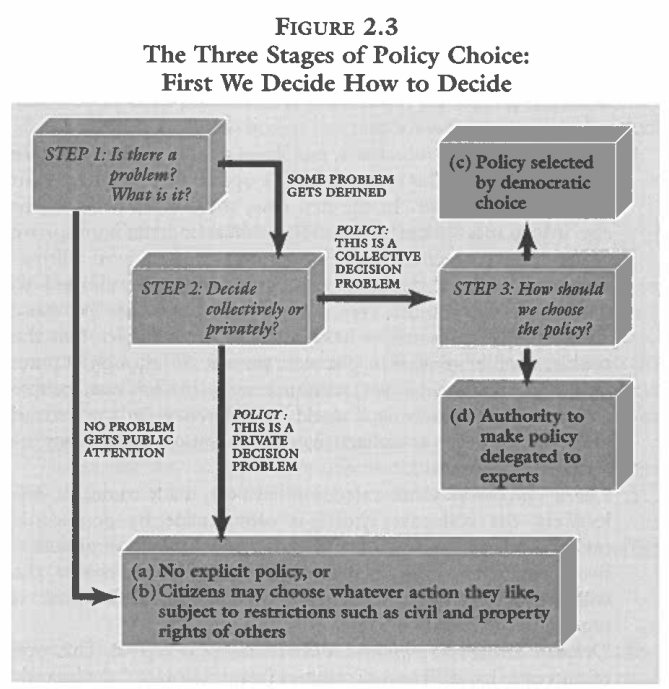

Today’s Agenda
I. The Basics of Problem-Solving in a Community
- Argument: Your environmental problem is public and should be solved collectively
Justin Leinaweaver (Spring 2024)
Assignment 4
Getting Involved in our Community
Find or create an opportunity to get actively involved in your issue locally (e.g. litter pickup, river cleanup, working with a local NGO or city agency on your issue, etc.)
Write a report describing what you did, who you worked with and what you learned that will help you with solving your chosen policy problem.
1) The Basics of Problem-Solving in a Community
“Politics”
“Environment”
“Policy”
A useful policy proposal MUST:
Be specific,
Be adapted to the specific stakeholders,
Be adapted to the conditions on the ground, and
Include an evaluation of strong alternative proposals.
For Today

Describe your environmental problem
Describe your environmental problem
| Public Problem | Collective Decision | |
|---|---|---|
| 1 | ? | ? |
| 2 | ? | ? |
| 3 | ? | ? |
| 4 | ? | ? |
| 5 | ? | ? |
We Need a Policy Solution
Argument 1: This is a public problem
Argument 2: This requires a collective decision
Describe your environmental problem
| Private Problem | Individual Decision | |
|---|---|---|
| 1 | ? | ? |
| 2 | ? | ? |
| 3 | ? | ? |
| 4 | ? | ? |
| 5 | ? | ? |


For Next Class
Read the chapters in the syllabus describing domestic processes for problem-solving, and
Submit to Canvas: What are three key elements you argue are necessary to successfully navigate a domestic policy-making process?